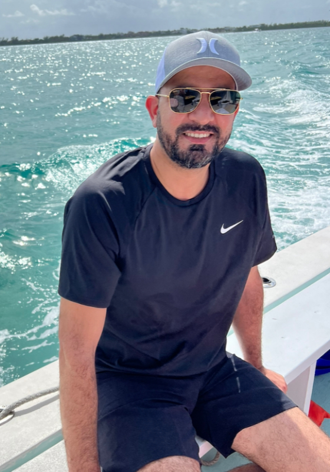

From the Atlas Mountains of Morocco to the swamps of Florida, it's been 20 years since Tawfike Bouyalitene, a 42-year-old dad to three wonderful girls: Sophia, 16; Judy, 5; and little Jana, 3; made the journey from his hometown, Agadir, Morocco, to the United States. It's been a trip filled with changes, tough times, and things he's learned along the way.
Tawfike's story starts in Casablanca, Morocco, where he was born. When he was just 6, his family moved to Agadir, a pretty coastal city where he grew up. Life took different turns, and at 22, he started exploring new places.
Next, he found himself in Orlando, Florida. Tawfike's adventure began with the Disney cultural program. He represented Morocco in Epcot for a year, bringing a piece of his homeland's charm to the entertainment world. After that, he got into different jobs in the hospitality field. He ended up back at Disney World, 13 years ago working as a waiter.
His journey isn't just about serving food; it's about making memories for people from all over the world. Tawfike loves his job because it lets him meet many people and create moments that matter.
Tawfike's life is painted with soccer, bike rides, camping trips, and dreams of exploring Greece. He follows a simple rule: "Live and Let Live." It means a lot to him and shows up in the stuff he enjoys, like watching soccer games, which helps him relax and feel happy.